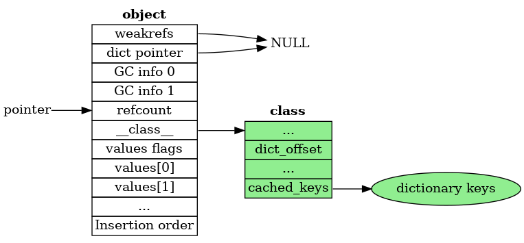
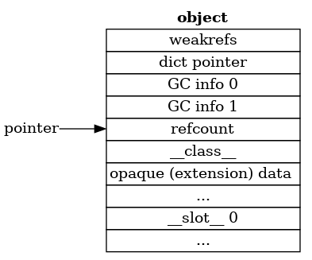
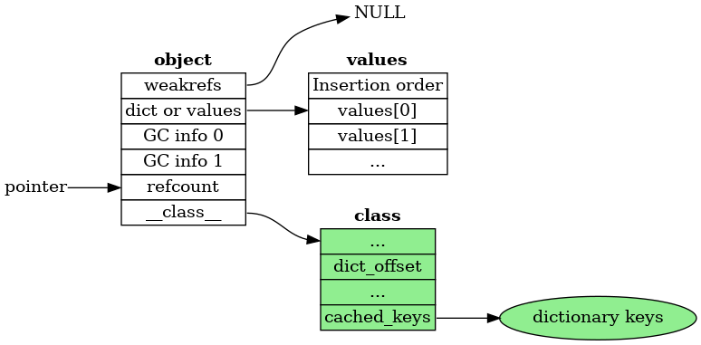
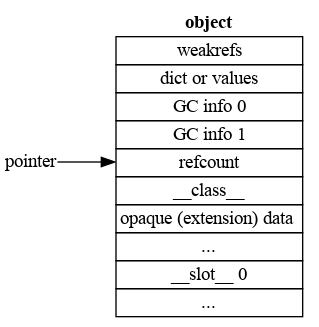

Object layout#
Common header#
Each Python object starts with two fields:
ob_refcnt
ob_type
which form the header common to all Python objects, for all versions, and hold the reference count and class of the object, respectively.
Pre-header#
Since the introduction of the cycle GC, there has also been a pre-header. Before 3.11, this pre-header was two words in size. It should be considered opaque to all code except the cycle GC.
3.13#
In 3.13, the values array is embedded into the object, so there is no need for a values pointer (it is just a fixed offset into the object). So the pre-header is these two fields:
weakreflist
dict_pointer
If the object has no physical dictionary, then the dict_pointer
is set to NULL.
3.12
3.12#
In 3.12, the pointer to the list of weak references is added to the
pre-header. In order to make space for it, the dict and values
pointers are combined into a single tagged pointer:
weakreflist
dict_or_values
If the object has no physical dictionary, then the dict_or_values
has its low bit set to one, and points to the values array.
If the object has a physical dictionary, then the dict_or_values
has its low bit set to zero, and points to the dictionary.
The untagged form is chosen for the dictionary pointer, rather than
the values pointer, to enable the (legacy) C-API function
_PyObject_GetDictPtr(PyObject *obj) to work.
3.11
3.11#
In 3.11 the pre-header was extended to include pointers to the VM managed __dict__.
The reason for moving the __dict__ to the pre-header is that it allows
faster access, as it is at a fixed offset, and it also allows object’s
dictionaries to be lazily created when the __dict__ attribute is
specifically asked for.
In the 3.11 the non-GC part of the pre-header consists of two pointers:
dict
values
The values pointer refers to the PyDictValues array which holds the
values of the objects’s attributes.
Should the dictionary be needed, then values is set to NULL
and the dict field points to the dictionary.
Layout of a “normal” Python object#
A “normal” Python object is one that doesn’t inherit from a builtin class, doesn’t have slots.
3.13#
In 3.13 the values are embedded into the object, as follows:
weakreflist
dict_or_values
GC 1
GC 2
ob_refcnt
ob_type
Inlined values:
Flags
values 0
values 1
…
Insertion order bytes
This has all the advantages of the layout used in 3.12, plus:
Access to values is even faster as there is one less load
Fast access is mostly maintained when the
__dict__is materialized

For objects with opaque parts defined by a C extension, the layout is much the same as for 3.12

3.12
3.12:#
In 3.12, the header and pre-header form the entire object for “normal” Python objects:
weakreflist
dict_or_values
GC 1
GC 2
ob_refcnt
ob_type

There are several advantages to this layout:
It allows lazy
__dict__s, as described above.The regular layout allows us to create tailored traversal and deallocation functions based on layout, rather than inheritance.
Multiple inheritance works properly, as the weakrefs and dict are always at the same offset.
The full layout object, with an opaque part defined by a C extension,
and __slots__ looks like this:
